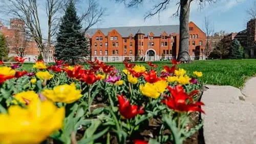
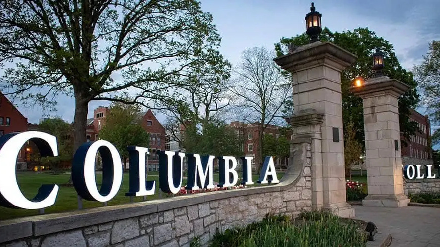
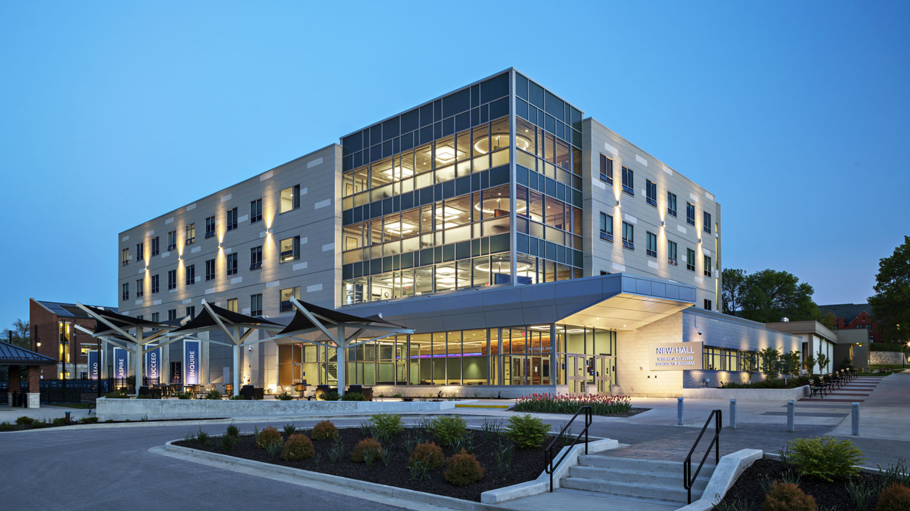
Welcome! Selamat datang! I am glad you are exploring our scholarship opportunities for Indonesian students interested in pursuing a Bachelor of Science in Computer Science at Columbia College of Missouri. If you have completed or will be taking exams from:
Our Global Community & Growth
We have a proven history of helping international students thrive. In 2020, we launched our first scholarship outreach in South Asia. Organized by my Nepalese students—who are now successful graduates—this initiative has grown into our thriving CCCS-Nepal Scholarships program.
Now, we are proud to expand our outreach to East Asia, Southeast Asia and South Asia to the following countries: China, India, Indonesia, Japan, Malaysia, Pakistan, South Korea, Thailand and Vietnam. For Indonesia, the CCCS-Indonesia Scholarships is below. Our goal is to build a vibrant, supportive Indonesian and pan-Asian community right here on campus.
A Rigorous Path to Elite Careers
The Computer Science program at Columbia College is highly challenging, but the rewards are immense. Many of my CS students choose to double-major in Mathematics to maximize their edge. The depth of our curriculum ensures our graduates are prepared for the world's most competitive tech environments.
Our alumni (including our graduates from Nepal) are regularly hired by top-tier global companies, including:
I hope you will join us, bring your unique talents to our campus, and help us build a lasting Indonesian community at CCCS. Please feel free to reach out to me directly if you have any questions, or if you would just like to chat about your options.
Dr. Yihsiang Liow
Associate Professor of Computer Science
Columbia College
1001 Rogers St, Columbia, MO, USA
yliow@ccis.edu |
CCCS discord (yliow)
https://www.ccis.edu/faculty/profiles/yihsiang-liow
OK. Let’s begin.
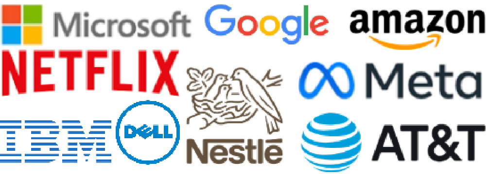
We have an extremely strong CS program. Our graduates are highly sought after, often securing job offers from top international companies before graduation. Many also advance to top-ranked graduate schools for their MSc or PhD degrees. Here are just a few of the global, multi-billion dollar companies where our alumni work:To date, three alumni have secured roles at Google—a company with a selection rate statistically 21 times harder than Harvard University. In total, our alumni work at four of the "Magnificent Seven" tech giants. (Industry Insights: The Magnificent Seven (Mag 7) represent the world’s most valuable and influential technology leaders. They are Alphabet (Google), Microsoft, Amazon, Meta, Apple, Nvidia, and Tesla. These giants shape the future of AI, cloud computing, and advanced engineering.) While the average starting salary for a CS graduate is around $80,000, our graduates at Google command starting packages of approximately $150,000, plus bonuses and stock options. Furthermore our graduates have gone to the following institutions for graduate studies (MSc and PhD):
Here is a pdf of more companies hiring my CS graduates, information on my graduates going on to do MSc and PhD, and startups created by my graduates.
Here are some of my international graduates and the companies that hire them:
Here are testimonials from some of my graduates:

“The CS program at Columbia College is hugely underrated. We have one of the top computer science programs in the Midwest. To have such a small group of students and still have a shot at the world’s top software companies – Google, Amazon, AT&T and lots of other industry-leading companies – is a huge deal.”
– Saurav Bhattarai (Google, Netflix)
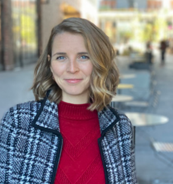
“If you do the math on return on investment for your college degree, the computer science degree at CC has to be the best in the region. I hope over time people can understand how rigorous this program is and how well-prepared the graduates are. People see that in me now that I’m out in the field."
– Julia Collins (ADP, co-founder of Truss)
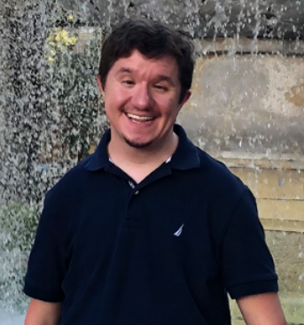
“I would not be where I am without the experiences I had at CC. Being a tutor to other CC students and high school students for Dr. Liow made a pretty big impression on me as a whole. Having the opportunity to understand students and help them helped me grow.”
- Ryan Frappier (Google)
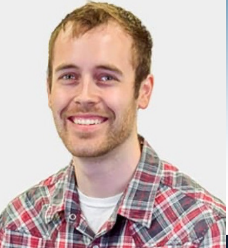
“At times the program was tough, but I appreciated it and never again wavered in my growing passion for computer science.”
- Sam Leubbert (MidwayUSA)
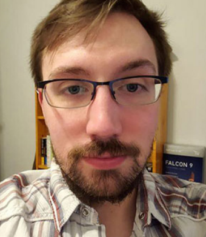
“Then I got into it and really fell in love with the entire discipline. I thought I had critical thinking skills until I got into it and realized that I might actually be dumb. It trained us to think in a totally different way. It teaches you about perseverance. The people who are successful are the ones who realize early on that it’s going to be difficult and who just keep persevering forward and accepting that it’s going to be challenging.”
- Michael Fisher (Garmin, Selex ES)
Our core strength lies in advanced algorithms. This is the single most critical skill for any CS major. Technical interviews at elite global firms focus heavily on a deep and practical understanding of algorithms and data structures. By mastering these subjects at CCCS, our students gain a distinct competitive edge in the global job market.
A world-class computer science education requires a perfect balance of theory and hands-on practice. At CCCS, we believe a great graduate must be an elite programmer. Our core languages are C++ — the bedrock of high-performance software (Industry Insights: Why C++?) — and Python, the language of modern AI and data science. Because of our immersive, high-volume coding philosophy, CCCS students develop an extraordinary ability to adapt. While standard programs focus on just one tool, our students learn to master entirely new languages in under two weeks. This rapid adaptability prepares you perfectly for the tech industry, where engineers are regularly expected to pick up new frameworks in a matter of days.
Throughout our program, you will also gain exposure to a diverse stack, including MIPS, SQL, OCaml, and Java. This deep versatility is why our graduates enjoy highly successful careers across the globe, working fluently in whatever language the industry demands — whether it is C, C++, Python, Java, C#, Rust, or Go.
In addition to our world-class software engineering curriculum, our graduates excel in the highly specialized field of embedded systems engineering. Our alumni develop critical, real-time software that powers infrastructure and life-saving technology worldwide. This includes engineering systems for high-speed bullet trains, advanced medical devices, air traffic management, avionics, and global positioning systems (GPS).
Besides weekly assignments, CCCS is very deeply project-driven,
emphasizing hands-on, real-world creation.
One tradition of CCCS is our
end-of-semester CS Presentation Day where students present their work.
Below, Cole Schwandt presents his project for the computer graphics class.
We believe that technical brilliance must be paired with strong communication. Public speaking is a core pillar of the CCCS education. If an engineer cannot confidently articulate their ideas, they will struggle in competitive job interviews. Our presentations ensure every student graduates as an
articulate, confident professional.
 .
.
To see the depth of our practical coursework, look at these standard assignments from our Computer Graphics course: Angry bird, Fractal terrain, Robotic arm. In our AI course, students put their skills to the test in the AI Othello Tournament, where student-coded intelligent agents compete head-to-head (video 1 see time 21:56 and 33:30, video 2 see time 10:05 and 13:38):
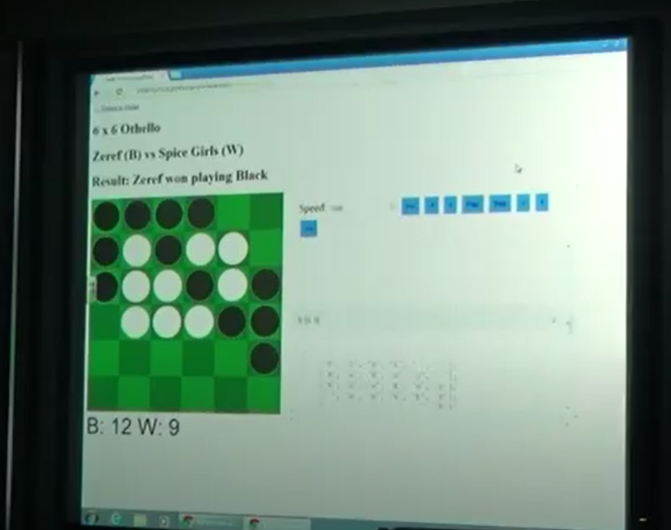
Here is a class assignment for the AI class: AI sudoku. Here are two more class projects: Galaxian, Frogger.
We have small classes and we are not like schools where there are 200-800 students in a class. Here,
Eric Garcia is giving a proof in the cryptography class.
 Richard Feynman (Caltech, physics Nobel prize winner) said:
Richard Feynman (Caltech, physics Nobel prize winner) said:
“I think, however, that there isn’t any solution to this problem of education other than to realize that the best teaching can be done only when there is a direct individual relationship between a student and a good teacher – a situation in which the student discusses the ideas, thinks about the things, and talks about the things. It’s impossible to learn very much by simply sitting in a lecture, or even by simply doing problems that are assigned.”
With an effective and knowledgeable professor, a
small classroom learning environment is much better than this at a big school:

CCCS is a vibrant, collaborative learning community where students solve complex problems together, support each other's growth, and have fun along the way (video). While self-study and reading textbooks are valuable, learning in isolation is often too slow and unrealistic. Modern tech companies operate through teamwork. By collaborating every day, our students develop the exact communication and peer-learning skills required to thrive in the professional world.
In 2020 and 2021 we hosted several video conferences to meet up with students from Nepal. The largest video conference had 275 registrations. If we have enough Indonesian students we will have a CCCS-Indonesia video conference and bring more Indonesian high school students to CCCS.
The CCCS club run by the CS majors is the most active club on campus. We have won the best student club award twice. Here are some random videos and pictures of some events.
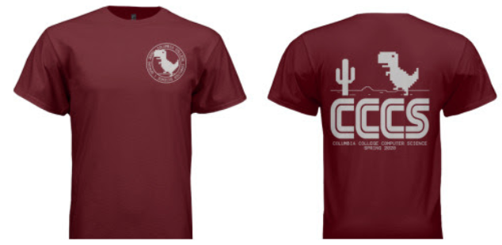
Here is our High School Programming Contest:

In 2026, 41 high school students registered. 1 high school student from India took part remotely. My graduate Ryan (at Google) was the lunchtime guest speaker (video). In a few years’ time we hope to host more than 200 high school students and many more remotely throughout the world. A huge number of my CS majors volunteer for this annual fun event.
Here is a company tour of MidwayUSA. During the tour, we were shown some of the most sophisticated warehouse automation equipment.
MidwayUSA has 6 departments in their IT division. 5 of the 6 IT managers are my graduates.

Here are some of our activities:
chess tournament,
CS jam (where students play a musical instrument, sing a song, read a poem),
movie night,
game tournament, etc.:

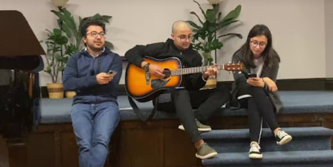
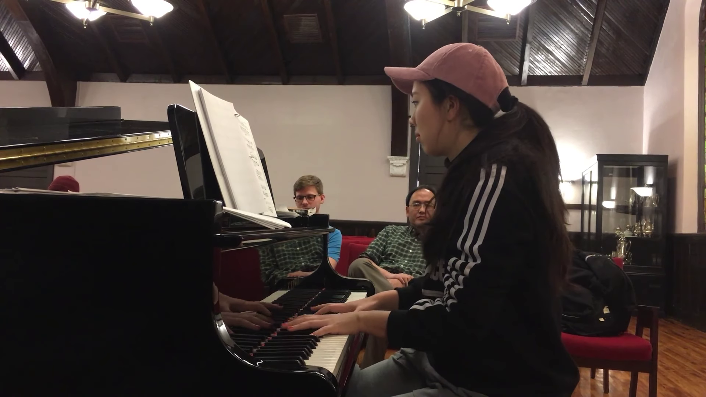

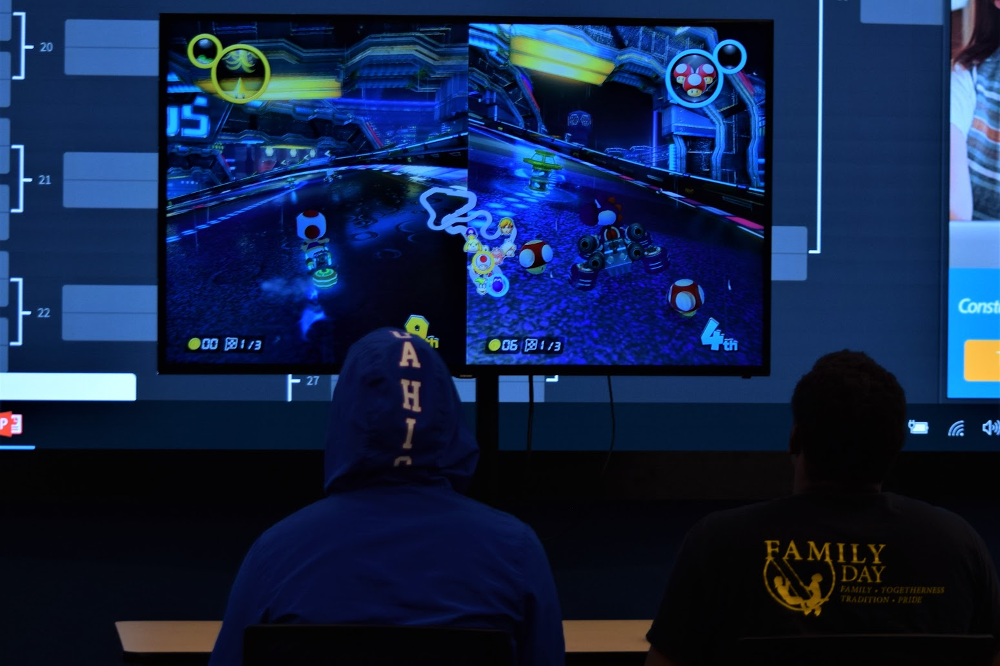
Graduates come back to visit me. Here’s Michael Fisher who came back to town and had coffee with some students at a local coffee shop. He was at Selex ES (air traffic management) and then moved to Garmin (GPS and avionics). He also gave a talk on his work.

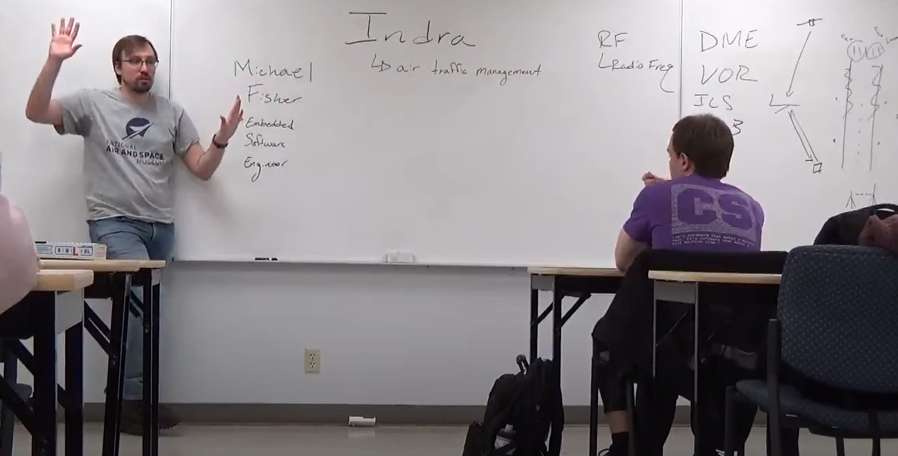
And here is a lunch meeting with graduate Julia Collins (cofounder of Truss) in our dining hall: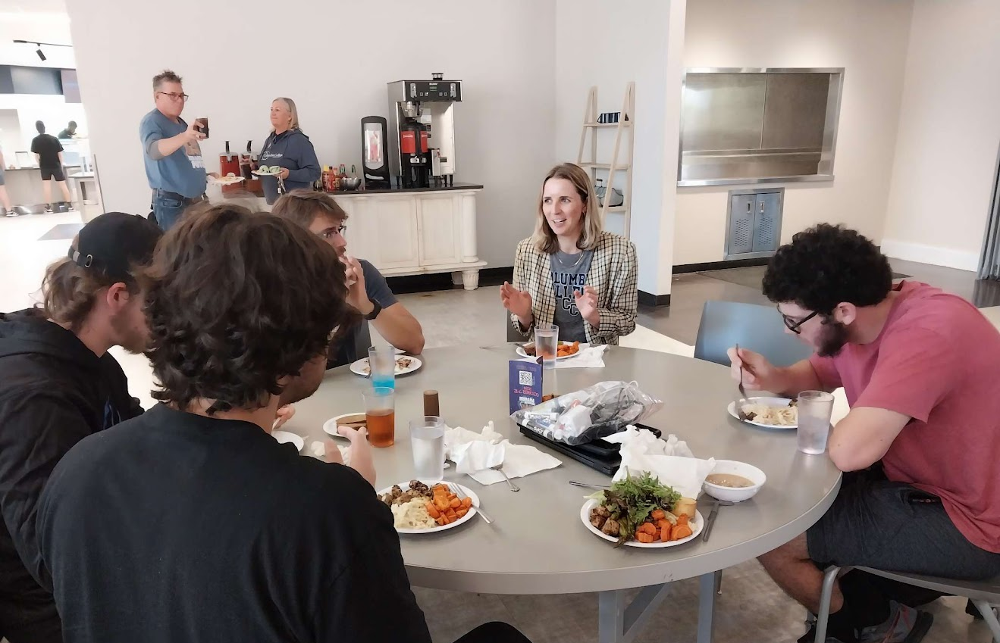
And here’s Saurav (Netflix, Google) who flew back to Columbia from California and had dinner with us at a popular local Chinese restaurant (he’s the rightmost person):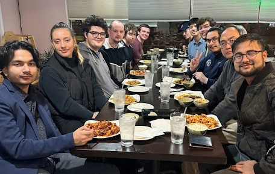
Another one of our traditions is our CS Welcome Lunch where CCCS majors and graduates are invited. It’s a great opportunity for graduates to meet with each other again and also for current undergraduates to hear what graduates are working on.

The CCCS majors also started the CC table tennis club. We hold our CC Open Table Tennis Tournaments once every semester.
CCCS is not just a CS degree program. It’s a strong and active community of people who are passionate about CS.
According to google:
Columbia College in Missouri is recognized as one of the safest college campuses in the nation, often ranked among the top in the country for safety, security, and low crime rates, earning a superior safety score of 98.18 in past evaluations.
Key 2026 Safety Features & Data:
As of 2026, the average cost of living index for Columbia Missouri is 91.3 out of 100 for average. Therefore Columbia Missouri is very affordable and the cost of living for Columbia, Missouri, USA is below the national average.
Columbia, Missouri, USA is frequently listed as one of the top most livable college towns in the USA. For instance according to an article in USA Today Columbia, Missouri is ranked #17 among all college towns in the USA. The website livability.com has ranked Columbia, Missouri as high as #6 for
| 1 Semester | 2 Semesters | 3 Semesters | |
|---|---|---|---|
| Tuition | $14,677 | $29,354 | $33,992 |
| Books | $240 | $480 | $720 |
| Housing | $3,313 | $6,626 | $18,266 |
| Food | $2,700 | $5,400 | - |
| Transportation | $800 | $1,760 | $3,088 |
| Personal | $2,240 | $4,480 | $8,928 |
| Loan Fees | $16 | $32 | $48 |
| Cost of Attendance | $24,066 | $48,132 | $65,042 |
| Residential Hall | Fall 2026–Spring 2027 Cost per Semester |
|---|---|
| Banks double room | $2,841 |
| Hughes double room | $3,040 |
| Hughes Haven | $3,320 |
| New Hall | $3,637 |
| Cougar Village | $3,735 |
| Scholarship | GCE/CIE/IAL Requirements | IB Diploma Points | IB Math Requirement | Remaining 2 Subjects Requirements (from CS, Physics, Chemistry) |
|---|---|---|---|---|
|
Alan Turing scholarship • $(21+3)K/yr = $24K/yr • Guaranteed 10hr/wk CS work-study |
• AAB or better • Math: A or better |
at least 38 points |
HL Analysis & Approaches • Grade 6 or 7 |
2 HL or SL subjects at Grade 6 or higher |
|
Tier 1 • $21K/yr |
• ABB or better • Math: A or better |
at least 35 points |
HL Analysis & Approaches • Grade 6 |
2 HL or SL subjects at Grade 5 or higher |
|
Tier 2 • $19K/yr |
• BBB or better • Math: B or better |
at least 32 points |
HL Analysis & Approaches (Grade 5) or SL Analysis & Approaches (Grade 6) |
2 HL or SL subjects at Grade 5 or higher |
|
Ada Lovelace Scholarship • Additional $3K/yr |
• BBB or better • Math: B or better |
at least 32 points |
HL Analysis & Approaches (Grade 5) or SL Analysis & Approaches (Grade 6) |
2 HL or SL subjects at Grade 5 or higher |
There are many paid summer internships. For instance, depending on the knowledge of an intern, Google pays up to $11K per month for summer internships. My students have secured summer internship positions at major companies including Google, IBM, Boeing, HP, Bracco Group, Selex ES, etc. Most summer internships are on-site. An example of a remote summer internship is Google Summer of Code (GSoC).
Undergraduate students can participate in prestigious, fully funded summer research programs. Over the years, several of my students (some of whom have since graduated) have participated in the NSF’s Research Experiences for Undergraduates (REU) program:
Participation often serves as a springboard for exceptional careers. For instance, Andrew transitioned into a Ph.D. program after graduation. Michael went on to work at Selex ES—a global leader in air traffic management—before moving to Garmin. Eric supplemented his research with a paid summer 2025 internship as an embedded software engineer at Bracco Group, a major international medical imaging company. Bracco offered a full-time job offer to Eric prior to his graduation. Robert and Cole are currently completing their senior years.
While REU programs are generally restricted to U.S. citizens and permanent residents, international students have access to excellent parallel opportunities. Examples include the Research in Industrial Projects for Students (RIPS) program hosted by UCLA/IPAM, as well as Microsoft Research Internships.
Here is an example timeline for a freshman starting in the fall semester of the same year he takes his GCE A-level exams. I'll call him John. (Note: A delayed application will negatively impact the issuance of F-1 visa.) The case for CIE, IAL, IB exams are similarly except for differences in exam months and release dates of official grades.
An important step is the application of F-1 student visa. The crucial step is the F-1 visa interview at your local US Embassy.
To prepare for your F-1 visa interview, search online for successful interview examples for international students. Practice mock interviews with friends or record yourself on your phone to review and improve. For example, the officer might ask why you chose Columbia College for CS, so research the program thoroughly and know your personal reasons well.
The F-1 visa denial rate is around 37% for Indonesia. Here is a Visa Interview Prep Sheet (F-1 Student Visa Focus) from Google that can help you prepare. Don’t panic if you fail your first attempt. You can book a second interview, which usually has a much higher success rate. You can also request for an expedited F-1 visa interview.
The International Student Office (Britta Wright) will provide information on F-1 visa application.
As part of the F-1 visa process, you must prove you have enough funds to study in the USA. This often means asking parents or relatives for financial support documents. I do not come from a wealthy family. My parents had to ask two uncles and an aunt for bank statements and letters of support so I could pursue my Ph.D. in the USA. Securing these financial documents as early as possible is crucial.
Q: How does the cohort scholarship work?
A: Suppose 5 students from the same school intend to come to CCCS
at the same semester.
Then on top of the other scholarships, each will receive an addition
$2K.
If in this group, John is a Tier 1 scholar, he will receive
$21K + $2K = $23K.
If in this group, Tom is a Tier 2 scholarship, he will receive $19K + $2K
= $21.
The cutoff date for cohort scholarship for fall semester is June 1.
This is to ensure there is time to proceed to F-1 visa application.
Of course a cohort can change.
For instance John might decide not to come to CCCS or he
failed the F-1 visa interview.
The cohort scholarship for a cohort is finalized at the end of the
second week of the first semester.
If John is the only person who left the cohort by the end of the
second week of the first semester, then Tom will receive
$19K + $1.5K = $20.5K scholarship.
From then on, the cohort scholarship Tom will receive will not
drop even if other members of his cohort leave Columbia College.
Q: What are the CS-related positions?
A:
CS-related positions involve multiple crucial roles including
Q: Can I live off-campus?
A: Yes, a student can stay off-campus after 60 credit hours. 60 credit hours is roughly two years. This is a pretty standard practice among all colleges/universities. However I know that some of my students have successfully petitioned to stay off-campus after 1 year. During summer, international students who stay in the USA can stay off-campus through summer sublets. Summer sublets are usually very cheap.
(FYI: In the USA, it is common for apartment rentals to be signed with 12-month contracts. Students who are from another city or another state usually do not stay in Columbia during summer. Such students will “sublet” their apartments during summer when they leave Columbia during summer, usually at a much lower rent and at a loss. Columbia is a “campus town” with many students. According to google, there are about 10,000 students who are not from Columbia. So there are usually many cheap summer sublets. According to google summer sublets can be as low as $500.)
Q: Do I need to know how to program
to get into your CS program?
A: No. In our computer science program, we do not assume you have prior programming experience. We have very successful graduates who enter our computer science program without any programming background. In fact, taking programming classes from an instructor who is not competent might do more harm than good.
Q: What computer science courses do you offer?
A: The list below are all our current computer science courses. Computer science students also have to take some math courses and many of our CS students minor or double major in math. Some math courses of interest to computer science majors are listed below. This is a popular question that students ask. But in fact this is the wrong question! Why? Because the course offerings of most computer science programs are about the same. Every computer science program will have courses on programming, data structures, algorithms, etc. Yet some computer science departments successfully send their graduates to top companies while some don’t. It’s the teaching effectiveness and rigor of the program that is important, not the list of courses. Of course it is still a good idea to at least check that a computer science program has a good number of courses. A computer science program with less than 10 CS courses cannot possibly be good!
Q: Can I take science classes?
A: Yes. Columbia College also offers classes in physics, chemistry, and biology.